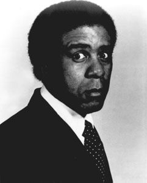
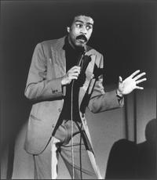
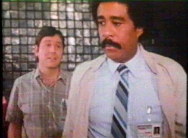
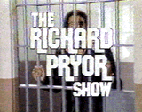
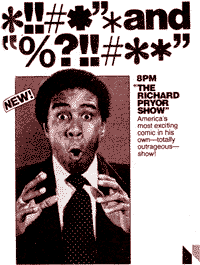
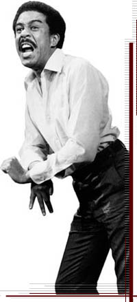
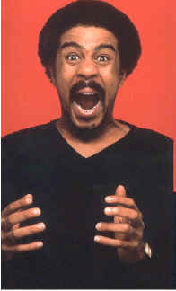
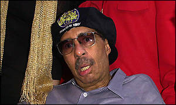
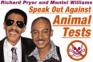
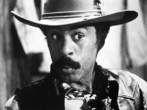

|
Richard PryorNo comedian working today should utter the word nigger without first obtaining written permizzle from the legendary Richard Pryor. According to Bill Cosby, the line Pryor drew between comedy and tragedy was "as thin as one could possibly paint it." He turned black American life into humorously depressing performance art with an astounding repertoire of accents, filthy language, and body contortions worthy of upscale Broadway theater. Richard Franklin Lennox Thomas Pryor III was born in Peoria, Illinois, on December 1, 1940, to an unwed mother and a pimpish father. He has always claimed that he was raised in his grandmother's brothel, where his mother worked as a prostitute. Of his mother, he told People magazine she "wasn't very strong, but she tried. At least she didn't flush me down the toilet, like some". But he did get to watch his mother perform sexual acts with Peoria's mayor. She abandoned her son when he was ten. Sexual abuse in his childhood environment, and being the regular target of gang violence set the stage for a lifetime of personal tragedies and drug use. According to Richard's bodyguard Rashon Khan, "The problem Richard had was what happened when he was a kid. It created a void so big, it didn't matter how famous he got." His early years were wrought with clashes with authority, very much akin to those of George Carlin. Yes, he was expelled from school at age fourteen for punching a teacher. He bounced around from jobs in packing houses and brief stints in the army. In the 1970s, after being advised to pattern himself after a nonthreatening Bill Cosby, he found himself performing safe, toothless comedy in white Las Vegas clubs, until one night he just gave up. In the middle of his act, he paused after a joke for what seemed like an eternity - then rhetorically asked his audience, "What the fuck am I doing here?" He walked off. This got him banned, and he lost many of his friends. By the end of the 1970s, Richard Pryor was the highest paid comedian starring in film, with long range contracts extending his ability to work well into the next decade. His appearance on Saturday Night Live drew tremendous ratings: the primary sketch featured Pryor as a job applicant and Chevy Chase as his interviewer who suggests a round of word association. Each of Chase's words grows incrementally more racist than the last, and Pryor attempts to follow his suit. White? Black. Negro? Whitey. Colored? Redneck. Tarbaby? Peckerwood. Spearchucker? White trash. Junglebunny? Honkey. Nigger? Dead honkey. Pryor's racial observations were about as tame as dialog written for Apu on The Simpsons -- but his frenetic, sociologically-aware inflections gave his stories overarching comic weight. Pinched, uptight impersonations of white people were delivered with depressing believability, and always worth the price of admission. White folks do things a lot different than niggas. They eat quieter. Pass the potatoes, thank you darling, could I have a bit of that sauce. How are the kids coming along with their studies? Do you think we'll be having sexual intercourse tonight? We're not? Well, what the heck? The text alone is hardly funny if you've been contaminated by the contemporary recycling of it by the likes of Sinbad. Still, Hollywood wasn't sure how to cannibalize Pryor to reap the most profits. The "variety" series he was offered on NBC became legendary for the staggering amount of network interference and imposed censorship. The Richard Pryor Show failed to make even the slightest dent in the television landscape. This was in 1977, while Happy Days and Laverne and Shirley were enjoying premiere status as the top two rated broadcast programs in America. NBC and Pryor came to an agreement: the remainder of his contract would consist of six "specials" meant for broadcast over the next three years. In 1984, he returned to televison... with puppets. Pryor's Place was a children's television program in which life lessons were dispensed alongside cameo appearances from the likes of Kareem Abdul-Jabbar, Marla Gibbs, and Henry Winkler - his former Nielsen nemesis from Happy Days. Pryor snorted cocaine every day for about fifteen years. He could have snorted up Peru. Six hundred dollars a day just to get his dick hard, and he was arrested for shooting his wife's Mercedes Benz, in a misguided attempt to prevent her from leaving. "The worst part about being in jail is when your woman comes to visit. You be in love and shit and you don't want no one in your [woman's] puss. Especially if she finds one that fits. I don't want no motherfucker stretching her pussy out of shape. When a woman leaves you she tells you why. All you can do is stand there and look silly. And if shit gets too thick, a nigger's got a great answer: Well fuck it then! Take your shit and get out! I'm gonna find me some new pussy! Then your woman comes back at you: If you had two more inches of dick you'd find some new pussy right here!" In addition to his battle with cocaine, Pryor loved and lied on a scale so massive he could barely keep it all together. During his relationship with actress Pamela (Jackie Brown) Grier, he proposed to another woman -- Deborah McGuire. On the night before his wedding to McGuire, Pryor was "caught in a compromising situation" with another woman, Jennifer Lee, who ultimately became his fourth wife. Rather than battling sexual addiction, he just went along with it. Richard Pryor's offstage resume not only includes five ex-wives, eight grown children (from marriages and affairs alike), two heart attacks, and a harrowing round of triple bypass -- without question one of the most dangerous kinds of open-heart surgeries. During this procedure, doctors yanked three clogged, nonfunctioning veins from Pryor's heart and replaced them with less-corrupted arteries from his legs. In June of 1980, Pryor was regularly smoking cocaine from his personal pocket pipe, causing (among other things) an irregular heartbeat, hallucinations, and paranoia. Sometimes he'd go chasing the dragon - heating up cocaine on a piece of tinfoil and inhaling the vapor. In a state of dementia and misguided suicidal despair, he doused his body with cognac and lit himself on fire. The result? Third-degree burns over fifty percent of his body. He was rushed to the Sherman Oaks Hospital trauma ward. A long recovery period followed, during which time he struggled to kick his longtime habit and rediscover his creative energies. Spiritually renewed by a trip to Africa, he declared he would never use the word "nigger" again. Pryor resurfaced in 1982 with Live on the Sunset Strip, one of the most critically acclaimed comic performances in history. He did indeed use the word nigger onstage, but his humor turned gentler and more introspective. His career as a film actor suffered through intolerable, pedestrian comedies like The Toy, Brewster's Millions and Critical Condition. Jo-Jo Dancer, Your Life Is Calling, Pryor's thinly veiled autobiographical film (a comedian relives his life following a near fatal accident) had an honorable premise, but failed at the box office. He was labeled as resignedly bland, someone who'd finally disappeared into creative oblivion. "Don't bother looking for a pattern to Richard's movies," said ex-wife Jennifer Lee. "He's lazy. He took the money. He doesn't care." Further exacerbating his career was being diagnosed with a degenerative disease of the central nervous system in 1986. This turned out to be multiple sclerosis, an illness with no known cure. However, Pryor is so adamantly opposed to the use of animals in researching even his own disease that he used his Christmas card to discourage donations to charities which fund such tests. Pryor also crusaded against Burger King with Alec Baldwin. No matter how many times you read that last sentence, it still sounds strange -- but here's something even stranger: in 1997, the wheelchair-bound Pryor made his last film appearance in David Lynch's Lost Highway. Lily Tomlin, on her longtime friend: "Richard lost jobs, was blackballed and everything else because people thought he was too hard to deal with or incorrigible or out of control. Now people's careers are built around drug use and rehab. I can't imagine anything happening to Eddie Murphy like what's happened to Richard. He paid the price for using language on the stage, but Eddie's been celebrated for it. I don't think Eddie would would ever be conflicted in any way about playing Vegas, playing white clubs with white managers and taking white money." In 1998, Richard Pryor was awarded the first Kennedy Center Mark Twain Humor Prize. His acceptance statement was released as follows: "Two things people throughout history have had in common are hatred and humor. I am proud, that like Mark Twain, I've been able to use humor to lessen people's hatred. I feel great about accepting this prize. It is nice to be regarded on par with a great white man. Now that's funny."
Timeline
|